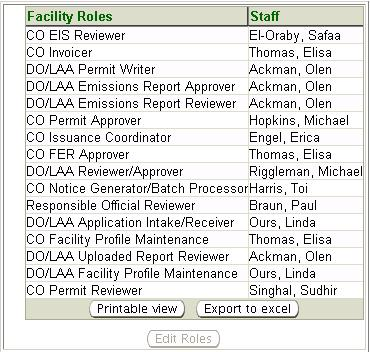

Previous Topic
Next Topic
| Facilities |
Previous Topic |
Next Topic |
The system’s third-level menu, User Roles, of the Facility Profile page allows you to view a list of all users (Ohio EPA staff) assigned to various tasks for the facility you are viewing.
There are currently 16 facility based user roles. Facility based user roles provide the mechanism for each task in each type of workflow to be automatically assigned to a pre-defined user for a given facility. For instance, every facility is assigned: a permit writer to perform the preliminary and technical review of their permits and reports; an approver to sign off on those permits at the DO/LAA; and an issuer to issue permits. Each role may be assigned to one or many tasks in a workflow and the same person may also be assigned multiple roles per facility. Facility based user roles are automatically assigned to staff when a new facility is created in the system, based on the county in which it is located. Most submittals by a facility (e.g., application, emissions report) will result in a workflow being created by the system and appropriate roles being assigned. The first task will then appear on the corresponding user’s ToDos list accessed through the Home tab.
The following datagrid of information will appear when you access the third-level menu, User Roles:

Role assignments can be easily changed by the system administrator in a wholesale manner. Additionally, the user assigned a role and consequently a workflow task can easily Reassign that single workflow task to another system user without changing the default role assignments (via the third-level menu on the Task Profile).
Information from the User Roles
list may be viewed, exported
to Excel
or printed. By clicking  you may view and print. By clicking
you may view and print. By clicking  a pop-up
will appear in which you must click Open in
order to view the
information in Excel.
a pop-up
will appear in which you must click Open in
order to view the
information in Excel.
Copyright © 1996, 2004, Oracle. All rights reserved.